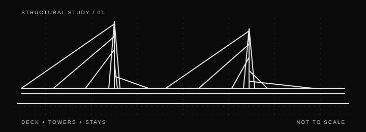

PROJECT STUDY / 001 · CONCEPTUAL
Cable-stayed bridge:
form and load path.
A conceptual learning exercise to identify major components and understand the basic structural idea behind a cable-stayed bridge.

Purpose
The goal is to identify the deck, towers, stays and supports, then describe the broad route through which loads are transferred. This drawing is schematic and does not represent a real bridge design.
Main components
- Deck: carries traffic and transfers loads to the supporting system.
- Stays: inclined tension members connecting the deck to the towers.
- Towers: support cable forces and transfer resulting actions into the foundations.
- Foundations: transfer structural actions into the ground; actual design depends on site conditions.
Questions to investigate
- How does the cable arrangement affect force distribution?
- What assumptions would be needed for a simplified structural model?
- Which loads, material properties and boundary conditions would be required for analysis?
Educational concept only. No dimensions, load calculations, code checks, geotechnical data or construction recommendations are provided. Do not use this study for real-world design.